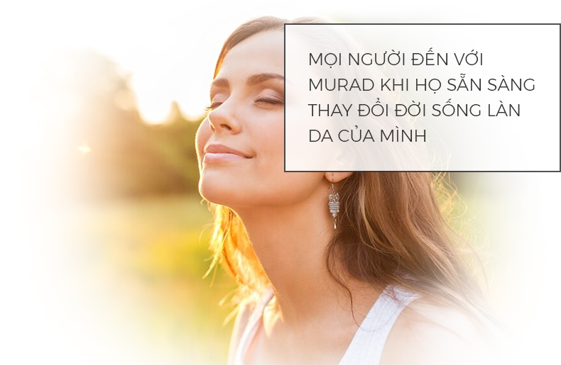
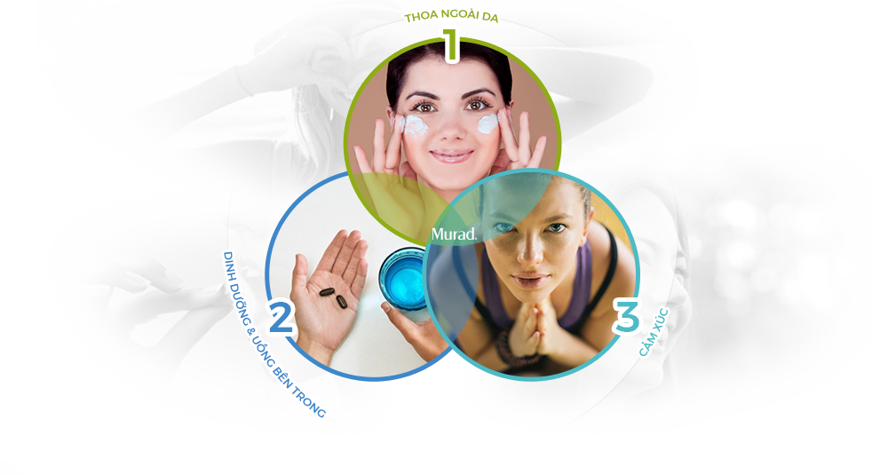

TẠI SAO CHỌN MURAD

Murad đảm bảo sẽ mang lại sự khởi sắc cho làn da vì chỉ tại Murad bạn mới tìm được sự kết hợp giữa Thành tựu khoa học tân tiến và Kinh nghiệm làm nghề của Bác sỹ da liễu để tạo nên những sản phẩm chăm sóc da có hiệu quả cao, những viên uống chức năng và những chương trình cải thiện lối sống giúp mọi người Sống Đẹp – Sống Khỏe- Sống Chất Lượng.
Là nhãn hiệu của Bác sỹ da liễu hàng đầu tại Hoa Kỳ - Howard Murad M.D, những sản phẩm tại Murad vẫn duy trì nguyên lý khoa học của nhà sáng lập.
Được đúc kết bởi triết lý Sức Khỏe Tổng Thể và kinh nghiệm điều trị thực tế cho hơn 50,000 bệnh nhân đã điều trị tại viện Da liễu và Sức khỏe tổng thể của ông tại Los-Angeles. Những công thức được thắng giải của ông đã giúp cho hàng triệu triệu người giải quyết được vấn đề da của họ.
Với hơn 50 năm nghiên cứu, Dr. Murad đã xây dựng được nguyên lý Sắc đẹp và Sức khỏe có mối liên kết quan trọng với nhau. Nhờ đó ông hình thành được phương pháp Sức Khỏe Tổng Thể để cải thiện từng tế bào trong cơ thể, từ đó đem lại tuổi thanh xuân cho làn da.

Murad đảm bảo sẽ mang lại sự khởi sắc cho làn da vì chỉ tại Murad bạn mới tìm được sự kết hợp giữa Thành tựu khoa học tân tiến và Kinh nghiệm làm nghề của Bác sỹ da liễu để tạo nên những sản phẩm chăm sóc da có hiệu quả cao, những viên uống chức năng và những chương trình cải thiện lối sống giúp mọi người Sống Đẹp – Sống Khỏe- Sống Chất Lượng.
Là nhãn hiệu của Bác sỹ da liễu hàng đầu tại Hoa Kỳ - Howard Murad M.D, những sản phẩm tại Murad vẫn duy trì nguyên lý khoa học của nhà sáng lập.
Được đúc kết bởi triết lý Sức Khỏe Tổng Thể và kinh nghiệm điều trị thực tế cho hơn 50,000 bệnh nhân đã điều trị tại viện Da liễu và Sức khỏe tổng thể của ông tại Los-Angeles. Những công thức được thắng giải của ông đã giúp cho hàng triệu triệu người giải quyết được vấn đề da của họ.
NHỮNG CÔNG THỨC ĐỈNH CAO

Murad đảm bảo sẽ mang lại sự khởi sắc cho làn da vì chỉ tại Murad bạn mới tìm được
sự kết hợp giữa Thành tựu khoa học tân tiến và Kinh nghiệm làm nghề của Bác sỹ da
liễu để tạo nên những sản phẩm chăm sóc da có hiệu quả cao, những viên uống chức
năng và những chương trình cải thiện lối sống giúp mọi người Sống Đẹp – Sống
Khỏe- Sống Chất Lượng.
Là nhãn hiệu của Bác sỹ da liễu hàng đầu tại Hoa Kỳ - Howard Murad M.D, những
sản phẩm tại Murad vẫn duy trì nguyên lý khoa học của nhà sáng lập.
Được đúc kết bởi triết lý Sức Khỏe Tổng Thể và kinh nghiệm điều trị thực tế cho hơn
50,000 bệnh nhân đã điều trị tại viện Da liễu và Sức khỏe tổng thể của ông tại Los-
Angeles. Những công thức được thắng giải của ông đã giúp cho hàng triệu triệu
người giải quyết được vấn đề da của họ.
GIẢI PHÁP RIÊNG CHO TỪNG NGƯỜI
Bởi vì một kích cỡ thì không thể phù hợp cho tất cả, Dr. Murad đã tạo ra mười dòng sản phẩm khác nhau để giải quyết cho mỗi vấn đề da
riêng biệt - và giải pháp chăm sóc da của Murad được tổ chức trong 3 bước sử dụng đơn giản, với mỗi sản phẩm được ký hiệu rõ ràng theo
thứ tự sử dụng dễ dàng: